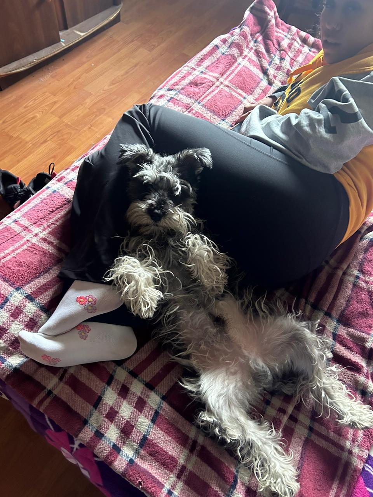
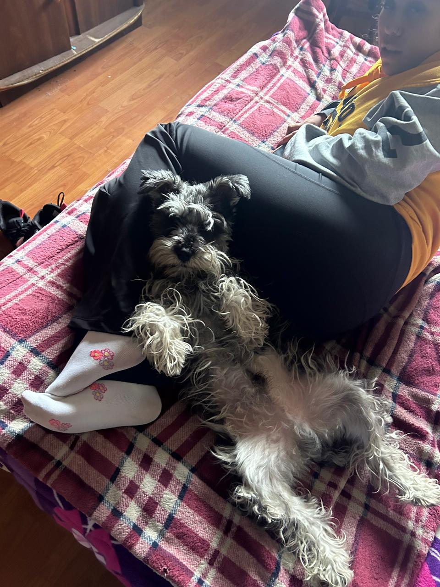

Perritos UwU
Imágenes de Perritos
 

Si quieres ver más imágenes de perritos, entra a este link
3 cosas que los perritos aman segun yo
- La Manzana
- Jugar
- Comer
3 cosas que los perritos odian segun yo
- Bañarse
- Estar solos
- Los sonidos fuertes
Cómo conoci a mis perritos
He tenido tres perritos, el primero se lo regalaron a mi hermana, pero tristemente ya falleció.
Actualmente tengo 2 lomitos, la mas grande me la regalaron en mi XV años y se llama Bacha, osea hace 8 añitos
y el segundo se lo regalaron a mi hermana hace 6 años, el se llama Nico
Los AMOO